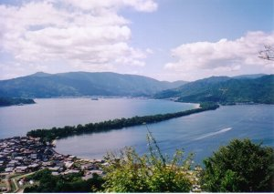
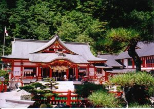
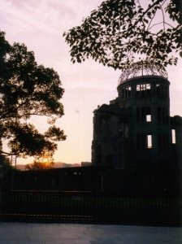
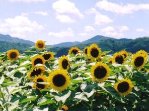
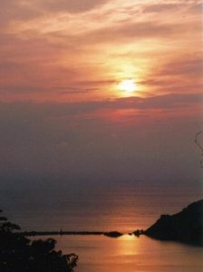

中国地方の旅 | 2004.08.11〜15 |
|---|---|
|  １）日本３景 天橋立 |  ２）津和野 稲荷神社 |
| １）日本３景 天橋立：本体の約３Ｋｍを歩くことができます（時間制で車両もＯＫ）。海水浴場であるのには驚きました。片道を１時間歩いて。帰りはボートで１０分程度で戻るものよいと思います。高台より又覗きをすれば「天に続く道」（＝本体）がきれいにみれます。 ２）津和野 稲荷神社：山口県津和野市は山陰の小京都。小さな町並みに自然あふれ、古風な建物が多数あります。中でも高台にある稲荷神社は朱色豊かですばらしく思いました。高台より降りる道には鳥居が多数つながり通路となっています。 | |
 ３）鳥取 らくだ |  ４）広島 原爆ドーム |
| ３）鳥取 らくだ：鳥取砂丘には欠かせないキャラクターです。500円でらくだにのった写真を何枚でも撮ってくれます。遊覧歩行は1000円以上ですがその感想は一度体験あれ！砂丘は高低差があり、海岸まで２ｋｍ程度歩きます。結構疲れます。 ４）広島 夕暮れ：原爆ドーム、平和記念資料館には多数の外国の方が訪問されていました。平和記念資料館では原爆の惨さから平和の尊さを求め、また２度とあってはならぬための回帰、さらに原爆関連の勉強もできました。入場料50円は資料館ができてから変動がないとのこと（今の物価だと200円程度じゃないかと毎年来る御方曰く）。原爆ドームは当時の瓦礫が残った様相を残しています。 | |
|  ５）ひまわり：京都の某市 |  ６）越前海岸 |
| ５）ひまわり：京都の某市。15万本のひまわりがあると話でしたが、祭りから１週間以上経過なので一部だけの撮影としました。この日は暑いのにひまわりは元気です。 ６）越前海岸 夕暮れ：この地方の夕暮れは圧巻。自動車で走行中に感激をし、停車後に撮影しました。場所は秘密。 | |
| コメント＆写真：シュガー | |